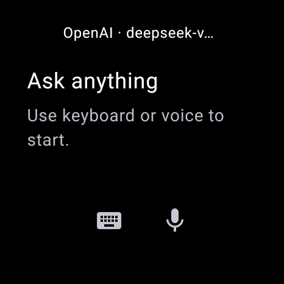
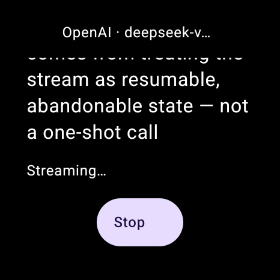
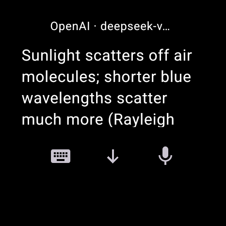
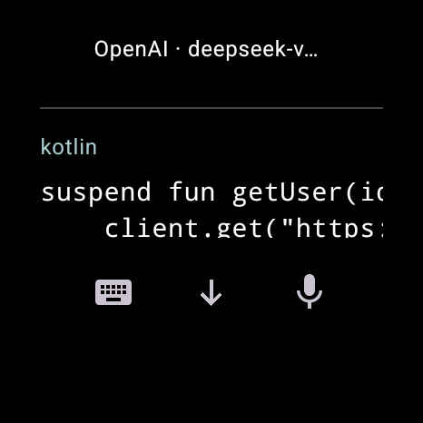
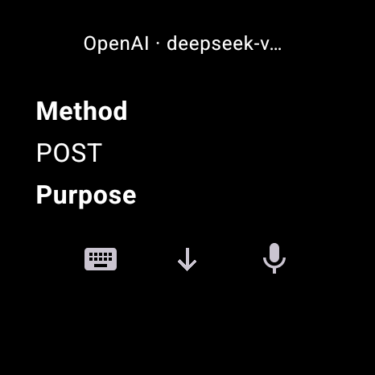
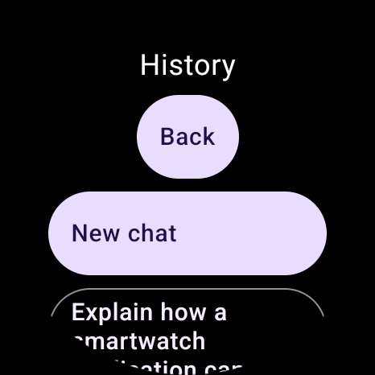

Install in 5 steps
- Download the APK from the
latest beta release.
Use the
.apkasset — never the “Source code” ZIP. - Verify SHA256 against the hash published on the release page:
Get-FileHash -Algorithm SHA256 .\NiroWear-*.apk
If it differs, do not install — download again. - Connect your watch with
adb(wireless debugging or USB), then install to that watch only:adb -s <serial> install NiroWear-*.apk
- Open NiroWear from the watch launcher, then disable debugging.
- Add a provider (below) and send your first message.
Add your API key — 3 ways
| Way | How | Best for |
|---|---|---|
| Type it | Menu → Providers / model → Add provider → fill Name, Base URL, Manual model ID, API key → Save securely | Short keys, one provider |
| Paste it | Same screen — paste the key into the key field from clipboard | Long keys you already hold |
| LAN pair it | Watch serves a one-time page on your Wi-Fi; paste the key on your phone or laptop; payload is ECDH + AES-GCM encrypted, single-use, 120 s expiry | Long keys, no typing on the watch |
Provider types: Add OpenAI (Responses), Add Anthropic (Messages), Add Gemini (GenerateContent), Add compatible (any OpenAI-compatible Chat Completions endpoint). Pick by protocol from your endpoint docs — a familiar model name does not select the protocol. A manual model ID works even when discovery fails. Validate · uses API sends a real (possibly billable) test generation before you save.
First chat
- Tap the keyboard icon → tap Prompt → type, e.g.
Explain why the sky is blue in three sentences.→ Send. - Read as it streams. Near the bottom the view follows; scroll up to read freely — tap Jump to latest to return to the tail.
- Stop cancels the request but keeps partial text. Retry replaces the last answer; long-press a message to edit & resend (later messages are deleted — no undo).
One dial, six moments
Genuine 466 × 466 emulator captures from a real HTTPS answer — each a scroll position, not a whole answer. Switch moments below; the stills underneath are the same files.






1 · Before — ask with keyboard or voice
FAQ
Does chat cost money?
The beta APK is free. It includes no API credit — your endpoint bills generation, validation, retry and edit/resend under its own pricing.
Do I need a phone or account?
No account, no companion app, no NiroWear cloud. The watch needs internet for API calls; saved history reads offline.
Stop — does it stop billing?
No. Stop cancels the client request and keeps partial text; the provider may already have done billable work.
Tables look different?
By design: rows render as vertical records under column labels — scroll through them, don’t look for a spreadsheet.
Something broke?
See Troubleshooting. Never clear data or uninstall as a first step — history and keys can be lost permanently. Report via feedback forms without secrets.
Get the beta
Requires Wear OS 3+ (API 30+), a computer with adb, and your own API key.